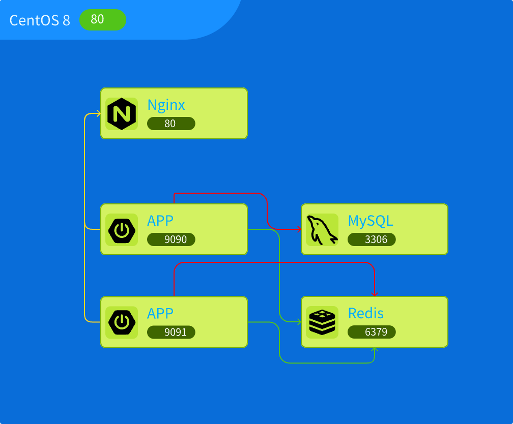
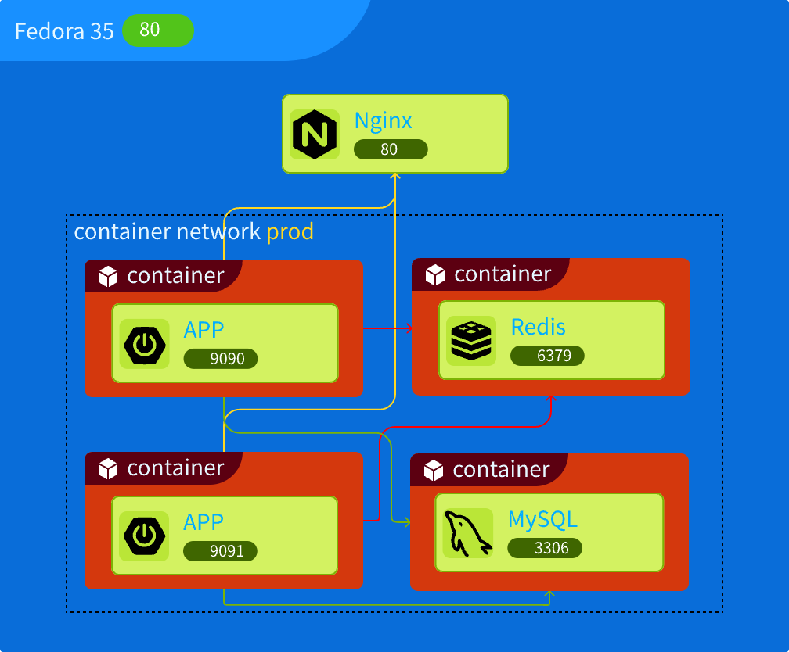

渐进式云原生实践: 使用 podman 容器化你的应用
星期六, 4月 23, 2022 | 3 | 星期六, 4月 23, 2022
何为云原生
云原生一词可谓是大红大紫, 老板见面不说一下都觉得落伍了,技术人员更是要与时俱进,学习这一系列的新技术
先看看 CNCF 对云原生的最新定义,注意云原生的定义一直是演进的,随着新技术,新架构的发展,定义也会变化.
云原生技术有利于各组织在公有云、私有云和混合云等新型动态环境中，构建和运行可弹性扩展的应用。云原生的代表技术包括容器、服务网格、微服务、不可变基础设施和声明式API。
这些技术能够构建容错性好、易于管理和便于观察的松耦合系统。结合可靠的自动化手段，云原生技术使工程师能够轻松地对系统作出频繁和可预测的重大变更。
以上这两段话来自 CNCF 的云原生定义.
简单的说就是用各种技术实现了大多数人梦寐以求的理想系统方案!
但是,如果一个传统技术栈的团队,要向云原生迁移,代价会是多大呢? 这是个值得思考的问题.
CNCF 有两个子站点 https://glossary.cncf.io/ 和 https://landscape.cncf.io/
这两个站点可以大致了解云原生涉及到新概念以及生态图谱, 如此多的概念和繁杂的生态,对于传统技术团队来说将会带来额外的心智负担以及新的挑战.
渐进式云原生
因此针对我们小团队以及小部门,我提出了渐进式云原生 和 轻量化云原生 的概念,以便云原生落地.
渐进式云原生 是指自下往上,分阶段完成云原生迁移和落地. 这里大概会包含 容器化, 微服务化 , DevOps ,CI/DI 等方面向云端迁移, 而且不强调顺序, 实际的顺序大多数根团队的技术栈相关.
所以这系列应该不会出现一来就叫你部署一套 k8s 集群, 可能到最后也不会,而是取决于你自己的选择.
这一系列就是一次渐进式云原生的实践,废话一大推,我们进入正题
使用 podman 容器化你的应用
第一篇是使用 podman 容器化你的应用 , 我认为容器化是迈向云原生过程中最简单的部分, 技术也成熟,风险不大. 这里为什么选择 podman ,详谈的话,需要再开一篇文章.
实践目标
将一个传统的项目 CentOS -> Nginx -> (Spring Boot, MySQL, Redis) 容器化
原项目是一个不算复杂的 Spring Boot 应用, 由于 Java 没法热更新, 所以使用 Nginx 反向代理了两套 Spring Boot 应用(两套应用可以同时运行也可以只运行一套), 关键时刻可实现用户无感知更新.
两套 Spring Boot 应用监听不同端口, 使用 Systemd 作为系统服务配置, 上传新 jar 包后, 重启一个项目后, 再重启另外一个项目, 可以通过简单脚本实现.
前端静态页面
拓扑图如下: 
实践过程
系统和 podman 的版本选择
原先部署在 CentOS 8 上, 这次容器化对 HOST 系统就没有特别的要求了, 所以选择了 Fedora Server, 三个原因: 一, 本人工作电脑使用 Fedora . 二, 容器技术依赖于 Linux 内核的 cgroup 和 namespace 技术,新内核会比老内核有优势, 虽然 Fedora 内核很新, 但是我相信 Linux 内核的稳定性. 三, CentOS 已经不再维护.
Podman 我选择了最新的 4.0.x, 它和 3.x 版本不兼容功能, 但是使用上不会有差别, 主要是网络功能默认使用了 netavark 和 aardvark-dns ,没有使用 cni, 这两个工具是用 rust 编写的, 这也是我去尝试的主要原因之一
容器使用选择 rootfull 还是 rootless , 我这里选择 root 运行, rootless 其实问题也不大,我测试除了没法 ping, 80/443端口等问题外, 还有一个不算特别大的问题就是, 容器创建好后无法再加入网络,需要创建的时候指定网络, root 情况下没问题.
禁用 selinux
安装 podman
fedora 中安装 podman 很简单
|
|
如果是安装 3.x 的版本, 还需要额外安装 podman-plugins 包,以实现 cni 网络的 dns 服务功能
|
|
在使用上版本 4 和版本 3 没有直接区别
新的拓扑架构
还没有完全想好 nginx 这个前端代理以及前端静态页面是否要容器化,所以这里先保留之前的部署方案,拓扑图如下: 
创建容器网络和基础容器
根据新的拓扑设计, Spring Boot 应用, MySQL , Redis 将会是以独立容器存在,所以需要创建一个网络将他们链接.
|
|
redis 容器
使用以下命令创建 redis 容器
|
|
podman 支持多镜像服务器 , 所以如果不指定镜像服务器, 会让你选择, 一般选择 dokcer.io 的即可
注意: 上面使用 –net prod 将 redis 容器加入到网络中, 同时指定了名字 redis , 这样网络中的主机名会是 redis , 也可以使用 –hostname 参数
注意2: 上面的命令没有使用 -p 6379:6379 将 redis 端口暴露出来,因为我们的 Spring Boot 应用也会加入到 prod 网络中,内网是可以访问的,所以不需要暴露出来.
可以使用以下命令测试 redis 容器
|
|
mysql 容器
|
|
-e MYSQL_ROOT_PASSWORD=12345678 指定了容器中 mysql root 用户的密码
-v /opt/deploy/mysql/data:/var/lib/mysql 将 host 机器 /opt/…./data 目录挂载到容器中 /var/lib/mysql 中, 这样 mysql 数据才能正常保存,如果缺少这个, 容器重启后, 数据将会被重置.
更多配置查看 https://hub.docker.com/_/mysql
创建 Spring Boot 容器
应用容器比较特殊,因为是内部应用, 也没法将应用发布到公共镜像上, 正常的流程是将应用打包,发布到私有镜像服务器中,再在 podman 中使用, 这里先跳过这一步,不然内容太多了!!!
我这里创建了一个公共镜像 https://github.com/Liangdi/spring-boot-launcher
这个镜像主要就是 jdk 环境,可以通过配置端口和 jar 名称,运行指定的 Spring Boot 项目
|
|
Spring Boot 应用容器化后,只需要将原先 mysql , redis 的链接配置修改一下即可, 原先是使用 127.0.0.1, 容器化后,改为容器主机名 mysql 和 redis 即可.
Nginx 反向代理和前端静态文件方面,没有去改动.
到此, 此次 Spring Boot 应用基本容器化完成, 后续就是要将应用微服务化了. 伴随着渐进式云原生,可能在运维,测试,客户交付方面也会有所改变.
创建 systemd 服务
使用 podman generate systemd 创建 sytemd service, 具体看文档 https://docs.podman.io/en/latest/markdown/podman-generate-systemd.1.html , 这里不再说明.
容器化总结
- 基本的容器化,程序开发上不需要有改变, 只是简单修改 prod 的配置文件
- 运维人员工作流程基本没变
- podman 基本兼容 docker 命令,所以有 docker 经验将很容易上手.
- 静态页面需不需要容器化,值的思考,如果是大流量应用, 静态页面肯定是 CDN , 如果是小应用, 那么多开一个容器多起一个静态服务器是否又是浪费? 我这次没有将静态页面容器化. 后续有新想法后再迭代
- podman 中还有 pod 管理功能,这也是我选择 podman 的原因之一,这方面将会在下次容器有化中使用.
- 这次交付产物使用 -v 路径的方式告知容器,后续可以使用命名 volume 替代.